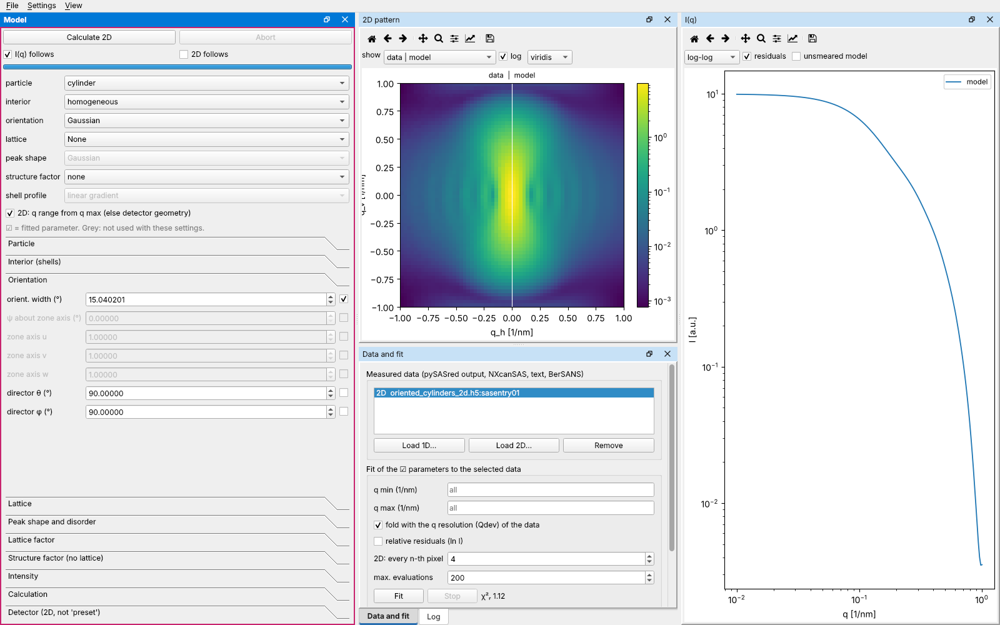
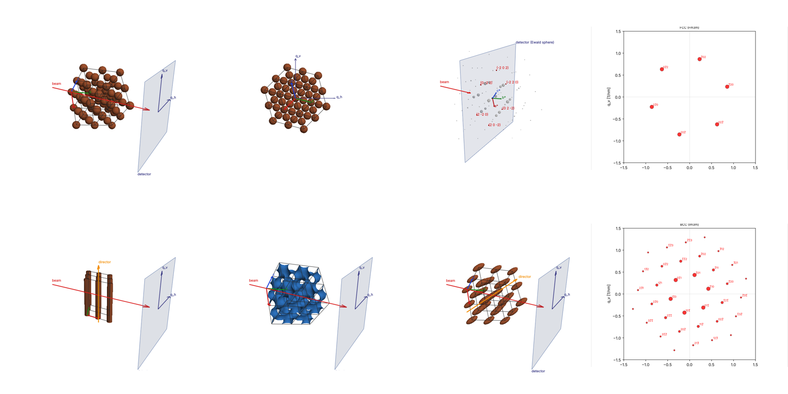

pySCAtter: scattering patterns of particles and ordered structures
pySCAtter calculates 1D and 2D small-angle scattering patterns of particles, of their orientation distributions and of particles arranged on lattices. It also fits the model parameters to measured 1D curves and 2D detector images. The calculation uses the hypergeometric-function algorithms of Wagener & Förster (Sci. Rep. 13, 780 (2023)). Each pixel switches between a power series, closed-form asymptotics and quadrature, whichever its error estimate allows. The size distribution is a Schulz-Zimm distribution throughout.
The tool continues the Scatter program (Förster et al., J. Appl. Cryst. 43, 639 (2010)) and its successor
SasScatter2 / CrystalScatter. It uses the same parameter names, and parameter files (.ini, with FITFLAG_ per
parameter) can be exchanged with them.
Start: the pySCAtter tab of the launcher, or
pysasfit-scatter [params.ini].Optional dependencies:
pip install -e ".[gui,scatter]". This adds mpmath, which the excluded-volume chain needs above q²Rg² = 5. Reading 2D NXcanSAS files also needs h5py.Units: all lengths are in nm and q is in 1/nm. Measured data are converted on reading: pySASred files in 1/Å are multiplied by 10.

The window after a 2D fit of the orientation width of cylinders. The 2D panel shows the data (left of q_x = 0) and the model (right); the fitted values are in the Model panel and in Data and fit.
Panels
Every panel can be moved, stacked, detached and hidden from the View menu, as in the other tools. The panel title bars are coloured; their colour can be changed under Preferences → Appearance.
- Model
The combo boxes select:
the particle;
its interior (homogeneous, core + shell, inhomogeneous shell, multi-shell, myelin);
the orientation distribution;
the lattice and its peak shape;
a structure factor (only without a lattice);
the shell profile.
Below the combo boxes the numeric parameters are grouped on pages (Particle, Interior, Orientation, Lattice, …). Picking an entry in a combo box opens the page with its parameters. A parameter is fitted when the box next to it is ticked. Parameters that the current settings do not use are greyed out: a parameter is enabled exactly when changing it changes the result. Lattice entries that pySCAtter does not calculate (CP-Layers, LDQ12) are listed for old
.inifiles but cannot be picked.The buttons, the two follows boxes and the progress bar stay at the top of the panel; only the parameters below them scroll.
Calculate 2D computes the 2D pattern and I(q). I(q) follows recalculates the 1D curve after every change. 2D follows does the same for the image; it is off by default, because oriented anisometric particles take seconds.
- 2D pattern
Shows one of four views:
the model;
the loaded 2D data;
data | model (data left and model right of q_x = 0);
the normalised residuals (data − model)/σ.
The scale can be log or linear, and the colour map can be chosen. Moving the cursor over the image shows q and d = 2π/q in the status bar.
With 2D: q range from q max ticked, the image is a square q map of ±q max with the given number of grid points. Otherwise it follows the detector group: distance, pixel size and number, beam position and wavelength (Eq. 1 of the paper).
- I(q)
Shows the model, the selected 1D data with error bars, and the model evaluated at the data q values. When the file has Qdev, this model is folded with the q resolution. Below are the residuals Δ/σ. The plot can be log-log, lin-log, Kratky (I q²) or lin-lin. unsmeared model adds the model without the resolution.
- Lattice view
Shows the structure that is calculated, in the laboratory frame of the calculation: the beam along x and the detector plane (q_x horizontal, q_y vertical, seen looking towards the sample: Axis and angle conventions). Four views are available:
real space 3D: the unit cells of a block of 1–5 cells per direction with the particles at their lattice positions, the cell axes a, b, c, the beam, the detector plane and the director. The particles have the shape and size of the model (sphere, core + shell, cylinder, disk, ellipsoid, cube, superball). Lamellae are drawn as layers of the disk thickness. The bicontinuous phases are drawn as the nodal surfaces gyroid G (Ia3d), Schwarz D (Pn3m) and Schwarz P (Im3m).
real space along the beam: a parallel projection as seen from the detector, with the same axes as the 2D pattern.
reciprocal lattice: the reflections hkl, scaled with m|f|²⟨P⟩(g)G(g), and the reciprocal axes a*, b*, c*. The reflections that reach the detector are red. The lattice factor is computed in the CrystalScatter form, a radial peak at |q| = g times an azimuthal factor A(ψ). So a reflection reaches the detector when its azimuthal spread (arc width 4/
EditAzi) reaches the Ewald sphere. The Ewald sphere is a plane for the q max map and curved with k = 2π/λ for the detector geometry. The reflection then appears at |q| = g along the projection of G. The radial width (4/D) only smears a reflection along its own direction, so it does not move a reflection onto the detector.EditAzi= 0 removes the azimuthal dependence, and every reflection becomes a ring. For the Gamma and anisotropic-Gaussian peaks, which are point-like in 3D, a reflection is red when it lies within 1.5 peak widths of the Ewald sphere.detector: Bragg reflections: their positions on the detector with hkl. For the isotropic (powder) orientation, the powder rings with the strongest hkl are shown instead.
The crystal orientation comes from the zone axis [uvw] (
ucn1–ucn3), which is put along the beam, and the rotation ψ about it. Rod and lamellar lattices are oriented in the same way (see Lattices).particle axes draws the particles either as the model treats them (along the director, or at random for an isotropic orientation, as the decoupling approximation assumes) or along the lattice axes. hkl in the 2D pattern panel marks the predicted reflections or rings on the calculated pattern, using the parameters that pattern was calculated with.
The 3D views need pyqtgraph and PyOpenGL (
pip install -e ".[morph]"). The detector view works without them.

Top: fcc with the zone axis [111] along the beam, in the four views; the six {220} reflections lie on the detector. Bottom: hexagonally packed cylinders, the gyroid, bcc with oriented ellipsoids, and its reflections.
- Data and fit
Loads 1D and 2D data with the pyTOOLbox readers:
pySASred NXcanSAS (1D and 2D) and ASCII files;
column text files (q, I, dI, dq);
BerSANS files. 2D BerSANS files need the beam centre, so they are better converted with pyTOOLbox first.
The fit uses the ticked parameters, the q range, the q resolution (on/off), relative residuals (ln I, optional), every n-th pixel for 2D, and a maximum number of evaluations. The result (values ± standard errors, χ²ᵣ, strong correlations) is shown below the controls and written to the Log.
- Log
Lists the files read, the calculation times and the fit results.
- File menu
Open and save parameter files (
.ini), load data, and export I(q) (text) and the 2D pattern (.npy, or text with columns q_x, q_y, I).
The parameters, fit flags, loaded files and the panel arrangement are kept in a session file
(scatter_session.json next to the preferences). The session is restored at the next start.
Models
Particles
particle |
parameters |
notes |
|---|---|---|
sphere |
R, σ_R |
closed form, all regimes |
cylinder |
R, L (half-length), σ_R, σ_L |
exact orientation average of P_cs·P_rod; all orientations |
disk |
R = half-thickness, L = disk radius, σ, σ_L |
C++ convention; needs L > R; all orientations |
vesicle |
R = inner radius, L = outer radius, σ, σ_L |
exact shell, Schulz on mean radius and thickness; R₂ and ρ shell are not used |
cube, parallelepiped |
R (half edge) |
isotropic and z-dir only |
ellipsoid |
R, L (semi-axis along the symmetry axis) |
all orientations |
triaxial ellipsoid |
R, L, R₂ |
always orientation averaged |
super ellipsoid (barrel) |
R, L, exponent p |
always orientation averaged; more than a minute per curve |
superball |
R, exponent p |
p = 1 octahedron, 2 sphere, ∞ cube; always orientation averaged |
excluded volume chain |
R = Rg, σ |
Regime I series in arbitrary precision (mpmath), Regime II q^(−1/ν) |
Kratky-Porod chain |
R = Kuhn length b, L = contour length, σ_L |
Kholodenko approximation; new |
Teubner-Strey |
R = correlation length ξ, L = repeat distance d |
microemulsion model; new |
Interiors
interior |
parameters |
notes |
|---|---|---|
core + shell |
R = core, R₂ = outer radius, ρ shell (core = 1) |
sphere, cylinder, disk, ellipsoid; for cylinder and disk σ_L is not used (one σ on all lengths) |
inhomogeneous shell, linear |
as core + shell |
the shell density falls linearly to 0 |
inhomogeneous shell, power law |
as core + shell, exponent α |
ρ ∝ (r/R)^α for star polymers and micelle coronas; α = −4/3 in a good solvent (Förster & Burger, Macromolecules 31, 879 (1998)); new in the GUI |
multi-shell |
R = core, n shells of the given thickness |
contrasts alternate between ρ shell and ρ 2nd shell; new in the GUI |
myelin |
R = water core, n bilayers of R₂ (lipid) + shell thickness (water) |
onion vesicles; new in the GUI. The lipid is the only contrast, so ρ shell would only scale the intensity and is not used |
Multi-shell and myelin interiors are available for the sphere and the vesicle. A core + shell interior with another particle than those listed ends with a message in the Log.
Structure factors (no lattice)
These are combined with the form factor in the decoupling approximation I = P (1 + β (S − 1)), where β = ⟨F⟩²/⟨P⟩. They are new in pySCAtter.
structure factor |
parameters |
|---|---|
hard spheres, Percus-Yevick |
R_HS, η |
sticky hard spheres (Baxter) |
R_HS, η, τ, δ; Baxter’s solution integrated numerically, exact in the hard-sphere limit τ → ∞ |
mass fractal (Teixeira) |
building-block radius r₀, D, cut-off length ξ |
Lattices
The lattices are:
lamellae;
hexagonal, square and centred-rectangular cylinder packings;
sc, bcc, fcc, hcp and bct;
Fd3m;
orthorhombic;
gyroid (Ia3d), OBDD (Pn3m) and Plumber’s Nightmare (Im3m), with the extinction rules of CrystalScatter. Plumber’s Nightmare has the reflections of bcc;
the 2D and 1D GISAXS entries, which are calculated as the same lattice in transmission.
Each lattice uses only the cell parameters that define it; the others are greyed out:
lattice |
cell parameters |
|---|---|
sc, bcc, fcc, Fd3m, gyroid, OBDD, Plumber’s Nightmare |
a |
bct, hcp |
a, c (hcp with c = a: the ideal ratio c = 1.633 a) |
lamellae |
a (the repeat distance) |
hexagonally packed cylinders |
a |
square and centred-rectangular cylinder packings |
a, b, γ |
orthorhombic |
a, b, c, α, β, γ (any cell) |
Before November 2026 the cubic lattices also used b, c and the angles. A parameter file with a cubic lattice and b or c different from a therefore gives a different pattern now; use bct or orthorhombic for such cells.
The peak shapes are Lorentzian, Gaussian, modified Lorentzians, pseudo-Voigt, Pearson VII and the generalised Gamma shape of Förster et al. (J. Phys. Chem. B 109, 1347 (2005)).
The peak width is set by the peak width combo, as by the two radio buttons of CrystalScatter:
4/D (Debye-Scherrer): δ = 4/D, where D is the domain size in nm. D is an absolute length, so the width is the same for every reflection and every lattice constant.
paracrystal: δ = 4/D + (σ_DW/d_nn)² d_nn q², which broadens the higher orders.
fixed 1: δ = 1 nm⁻¹.
The intensity is I = P (1 + β (Z − 1) G(q)), with the Debye–Waller factor G = exp(−σ_DW² q²/3).
EditBFactor is not used, as in the C++ code. Only reflections with |h|, |k|, |l| ≤ HKLmax enter (hkl max on
the Calculation page; it should reach beyond q max, for a cubic cell hkl max ≥ q max·a/(2π)). Z is:
the powder average for an isotropic orientation: Debye–Scherrer rings in the 2D pattern, whatever the azimuthal domain D_ψ is. The I(q) panel always shows this powder average, also when the 2D pattern is oriented;
an oriented single crystal (zone axis u v w, rotation ψ) otherwise;
the fibre average for fiber pattern. It is not available for the modified Lorentzian II, which cannot be normalised in 3D; the Log says so.
Orientation of a lattice. The zone axis [uvw] is the real-space direction ua + vb + wc of the
cell that is put along the beam; ψ rotates the crystal about the beam. The orientational spread of the crystal is
the lattice: azimuthal domain D_ψ on the Orientation page (EditAzi, in nm): every reflection is spread over an
arc of width 4/D_ψ on the sphere |q| = g, with the profile of the peak shape. D_ψ = 0 spreads it over the whole
sphere. The kind of orientation distribution (Gaussian, Onsager, …) and its width act on the particle axis only,
not on the lattice.
Rod and lamellar lattices are oriented in the same way. Their cell is a (lamellae: the layer normal), b, and c (cylinder packings: the rod axis):
setting |
orientation |
|---|---|
cylinder packing, zone axis [001] |
rods along the beam: the 2D lattice of spots |
cylinder packing, zone axis [100], ψ = 0 |
rods vertical, a along the beam: reflections on the horizontal axis |
lamellae, zone axis [010], ψ = 0 |
layers edge-on, layer normal horizontal: reflections h00 on the horizontal axis |
lamellae, zone axis [001], ψ = 0 |
layers edge-on, layer normal vertical: reflections on the vertical axis |
lamellae, edge-on, ψ ≠ 0 |
the layer normal and the reflections turn by ψ in the detector plane |
lamellae, zone axis [100] |
layer normal along the beam: no reflection reaches the detector |
Before November 2026 rods and lamellae ignored the zone axis and ψ: the rods were always vertical and the lamellar normal always along the beam.
Orientation distributions
The particle axis can follow Gaussian, exponential, Onsager, Maier-Saupe or cut-off distributions about
the director (θ, φ). Their width is particle axis: width (°) on the Orientation page (EditDbeta). The default
is 0.4°, which is almost perfect alignment; values below 0.5° are calculated as 0.5°. z-dir aligns all particles
perfectly along the director, fiber pattern rotates them uniformly about the beam, and isotropic is the powder.
The distributions are calculated for the cylinder, the disk and the ellipsoid (also with a core + shell interior). The cube has isotropic and z-dir only; any other choice ends with a message in the Log. The triaxial ellipsoid, the super ellipsoid and the superball are always orientation averaged, and their director and width are greyed out.
Laguerre is calculated as the exponential distribution.
The mirrored distributions give the same pattern as the plain ones, because all particles have a centre of symmetry.
With a lattice, the distribution acts on the particles only; the spread of the lattice is D_ψ (see Lattices).
The director (θ, φ) is defined as in CrystalScatter: n = (sin θ cos φ, sin θ sin φ, cos θ) in the frame (q_x, q_y, beam), the frame of pySASfit (Axis and angle conventions). θ = 0 points along the beam, θ = 90°, φ = 0 is horizontal, and θ = 90°, φ = 90° is vertical. The streak of long cylinders lies perpendicular to the director.
Fitting measured data
1D: the model is evaluated at the data q values. When fold with the q resolution is ticked and the file has Qdev (pySASred writes it), the model is folded with a Gaussian of that width (15-point Gauss-Hermite rule on a common grid).
2D: the model is evaluated at the q vector of every used pixel. Masked pixels and pixels outside the q range are left out. The beam component of q comes from the Ewald sphere when the file gives the wavelength. every n-th pixel thins the image n² times. The orientation distribution and the decoupling β are tabulated once per evaluation; for a fit of I₀ and background only, the unscaled pattern is reused.
Minimiser: least squares (trust region reflective). The bounds are the parameter ranges of the SasScatter GUI. Errors come from the Jacobian (scaled with χ²ᵣ). Correlations above 0.9 are listed.
Without errors in the file, 1 % of I is used as σ.
Relative residuals (ln I) weight all decades alike. This is useful when the statistical errors are too small at low q.
Preferences → pySCAtter sets four things:
whether I(q) follows parameter changes;
the largest value that hkl max accepts (9 as in SasScatter2, up to 30). A change applies when the dialog is closed; a larger hkl max in the panel or in a parameter file is reduced to the limit;
the largest number of evaluations;
the start value of the 2D thinning.
Validation
The comparison with the CrystalScatter C++ code, pixel by pixel, is described in Validation. The formulas are collected in Theory and formulas.
The tests are in tests/scatter:
The series and closed forms are compared with brute-force size and orientation averages (10⁻⁶ … 10⁻⁷).
They are also compared with Python ports of the CrystalScatter C++ formulas (sphere 2 × 10⁻⁵, core/shell after correcting the C++
ac9term) and with the 256 × 256 sphere image of the CrystalScatter documentation (rms 6 × 10⁻⁴).The new models have their own checks:
the Kratky-Porod chain gives the rod and the Gaussian-coil (Debye) limits and the Benoit-Doty Rg;
Percus-Yevick gives the compressibility limit (1 − η)⁴/(1 + 2η)², and Baxter’s sticky spheres reproduce it for τ → ∞;
the fractal structure factor gives 1 + Γ(D + 1)(ξ/r₀)^D at q = 0;
the Teubner-Strey peak lies at q² = k² − ξ⁻²;
the power-law shell with α = 0 equals the homogeneous core/shell sphere.
The fits recover synthetic parameters: a 1D fit with resolution recovers R, σ, I₀ and background; a 2D fit recovers the orientation width of cylinders to 0.3 %.
The wiring of the parameters is checked over a matrix of about 150 settings (particle × interior × orientation × lattice × peak shape × structure factor), in
test_wiring.py:every parameter the GUI enables changes I(q) or the 2D pattern when it is changed;
the parameters it greys out change nothing;
every entry of a combo box gives a result of its own, apart from the aliases named on this page;
settings that are not calculated end with a message, not with another result.
The default run takes the fast part of the matrix.
PYSASFIT_WIRING_FULL=1adds the slow settings (oriented cylinders, disks and ellipsoids, cube, superball, the fibre average of every lattice); the whole oftests/scatterthen takes about 40 minutes instead of 5.python tests/scatter/test_wiring.py fulllists all findings instead of stopping at the first.test_wiring_gui.pychecks the Model panel: one widget per parameter that reaches the calculation, enabled widgets equal to the used parameters, and the round trip of every parameter through the panel and the.inifile.test_iso_rings.pychecks that an isotropic lattice gives rings and that I(q) equals the ring intensity.
Calculation speed
Typical times for a 128 × 128 image (2 CPU cores):
model |
before |
now |
|---|---|---|
sphere, ellipsoid (oriented) |
< 0.01 s |
< 0.01 s |
cylinder, isotropic / Gaussian orientation |
0.4 / 0.6 s |
same |
cube, isotropic (σ = 0.07) |
380 s |
3.5 s (Numba), 9 s (NumPy) |
superball, isotropic |
24 s |
2.8 s (Numba) |
fcc, oriented, HKLmax 4 |
13 s |
0.02 s |
Fd3m, oriented, HKLmax 9, Lorentzian |
91 s |
0.3 s |
The gains come from four changes:
Lattice factor. Reflections of equal |G| share the radial factor and the normalisation, which are now cached. The angles to all reflections of a shell come from one matrix product. Gaussian factors are evaluated only where they exceed 10⁻²⁰ of their maximum.
Size quadrature of the generic bodies (box, cylinder table, parallelepiped). A Gauss–Legendre rule over the bulk of the Schulz distribution has 2.5 nodes per oscillation of the integrand, instead of a fixed 200–801 nodes. It is also more accurate for wide distributions at large qR, where the former Gauss–Laguerre rule was off by up to 10⁻³.
Orientation average of boxes. The angular grid and the size rule grow with q, in blocks of q points. Cubes use the x ↔ y mirror symmetry.
Numba (optional). Compiled kernels run on all CPU cores for boxes (isotropic and oriented) and for the superball table. Install it with
pip install -e ".[fast]", or with pacman under MSYS2. The code checks that the results equal the NumPy code to 10⁻¹².PYSASFIT_NO_NUMBA=1switches the kernels off.
GPU libraries (CuPy, PyOpenCL) are not used. Their wheels do not install into the MSYS2 Python.
Differences from SasScatter2 and limitations
Size-distribution weighting: the default is the authors’ reference weighting s = 0, which reproduces the C++ code.
pysasfit.scatter.set_default_weighting("volume")gives V²/V weighting instead (up to 20 % different P(q)); see the notes in the source.Precision: calculations are in double precision. The moment series are used only where the error estimate meets 10⁻⁶; quadrature is used elsewhere.
Not reproduced:
the Data/FFT/AI/ChatBot tabs;
GPU kernels and the quadrant shortcuts;
CP layers and quasicrystals (LDQ12): the entries are disabled, and a file that selects one is calculated without a lattice;
the GISAXS geometry: the GISAXS lattice entries are calculated in transmission;
the anisotropic Gaussian peak for oriented lattices (treated as Gaussian; isotropic orientation as in C++);
oriented patterns of the triaxial ellipsoid, the super ellipsoid, the superball and the octahedron, and orientation distributions of the cube;
the Laguerre orientation distribution (calculated as the exponential one).
Unused parameters: parameters of SasScatter
.inifiles that pySCAtter does not use (Ceff, stacking probabilities, VAx …) are kept in the files but not shown.Power-law shell: the profile is built from 20–120 thin homogeneous shells (exact multi-shell formula), so it is accurate while q × (shell step) ≪ 1.
Sticky hard spheres: the solution is Baxter’s Percus-Yevick solution in the adhesive limit; τ is used as the stickiness of the well of relative width δ.
References
M. Wagener, S. Förster, Fast calculation of scattering patterns using hypergeometric function algorithms, Sci. Rep. 13, 780 (2023), with Supporting Information.
S. Förster, A. Timmann, M. Konrad, C. Schellbach, A. Meyer, S. S. Funari, P. Mulvaney, R. Knott, Scattering curves of ordered mesoscopic materials, J. Phys. Chem. B 109, 1347 (2005).
S. Förster, S. Fischer, K. Zielske, C. Schellbach, M. Sztucki, P. Lindner, J. Perlich, Calculation of scattering-patterns of ordered nano- and mesoscale materials, Adv. Colloid Interface Sci. 163, 53 (2011).
S. Förster, L. Apostol, W. Bras, Scatter: software for the analysis of nano- and mesoscale small-angle scattering, J. Appl. Cryst. 43, 639 (2010).
S. Förster, C. Burger, Scattering functions of polymeric core-shell structures and excluded volume chains, Macromolecules 31, 879 (1998).
K. G. Yager, Y. Zhang, F. Lu, O. Gang, Periodic lattices of arbitrary nano-objects: modeling and applications for self-assembled systems, J. Appl. Cryst. 47, 118 (2014).
A. L. Kholodenko, Macromolecules 26, 4179 (1993); M. Teubner, R. Strey, J. Chem. Phys. 87, 3195 (1987); R. J. Baxter, J. Chem. Phys. 49, 2770 (1968); J. Teixeira, J. Appl. Cryst. 21, 781 (1988).
The API reference of this tool is listed in the API reference.